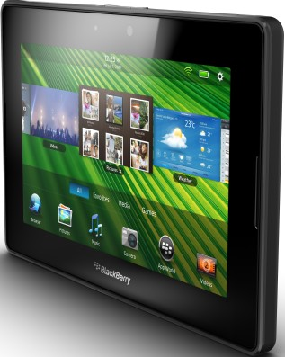

BlackBerry PlayBook (blackberry-playbook)
Jump to navigation
Jump to search
|  | |
| Manufacturer | Research In Motion / Quanta Computer |
|---|---|
| Name | Blackberry PlayBook |
| Codename | blackberry-playbook |
| Released | 2011 |
| Category | testing |
| Original software | BlackBerry Tablet OS 2.1.0.1917 |
| Hardware | |
| Chipset | TI OMAP 4430 |
| CPU | Dual-core Cortex-A9 |
| GPU | PowerVR SGX540 |
| Display | 1024x600 |
| Storage | 16 / 32 / 64 GiB |
| Memory | 1 GiB |
| Architecture | armv7 |
{kind=link}
This device is marked as not booting.
| USB Networking | |
|---|---|
| Flashing | |
| Touchscreen | |
| Display | |
| WiFi | |
| FDE | |
| Mainline | |
| Battery | |
| 3D Acceleration | |
| Audio | |
| Bluetooth | |
| Camera | |
| GPS | |
| Mobile data | |
| SMS | |
| Calls | |
| USB OTG | |
| NFC | |
| Accelerometer | |
|---|---|
| Magnetometer | |
| Ambient Light | |
| Proximity | |
| Hall Effect | |
| Barometer | |
| Power Sensor | |
| Camera Flash | |
|---|---|
| Keyboard | |
| Touchpad | |
| USB-A | |
| HDMI/DP | |
| Ir TX | |
| Ir RX | |
| Stylus | |
| Haptics | |
| Ethernet | |
| FOSS bootloader | |
Research
The Blackberry PlayBook can't be unlocked through any official methods.
There has been some research into the security of the chipset:
- http://droid-dev.mobi/wiki/Booting_chain
- https://processors.wiki.ti.com/index.php/OMAP4_Debug_and_Trace_Tools
- Bootrom dumps, dead links: https://forums.crackberry.com/blackberry-playbook-os-f228/playbook-bootrom-mlo-bootloader-830909/
- Security overview from NCC Group: https://www.nccgroup.com/uk/our-research/blackberry-playbook-security-part-one/
Blackberry implemented a package-on-package configuration for the OMAP4430 and DRAM. JTAG might give more interesting information, some research was done in 2013 by QuackQuack147: https://unlockplaybook.wordpress.com/2013/08/07/progress-irc-chat/ The JTAG pins are probably buried beneath the BGA package.
Link to bootrom of the OMAP 4430 on the Motorola Milestone 3: http://droid-dev.mobi/wiki/File:Omap_4430.bin.gz
Porting kexecboot-droid4 might be interesting if there are partitions that are not verified by the bootloader: https://github.com/tmlind/droid4-kexecboot/blob/master/PARTITIONS